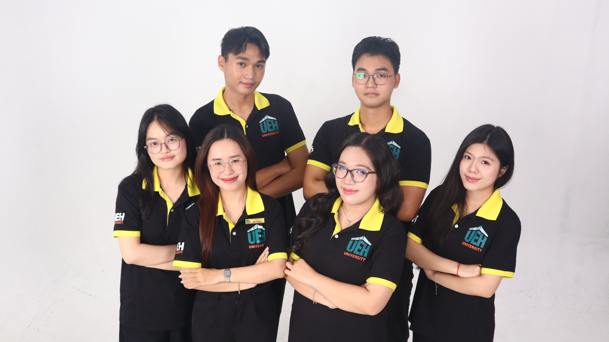
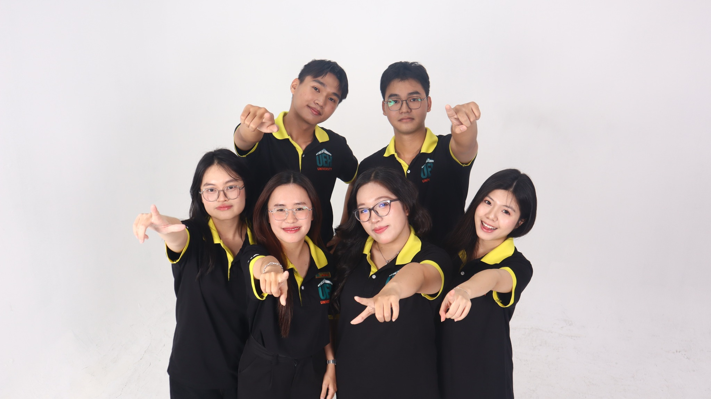
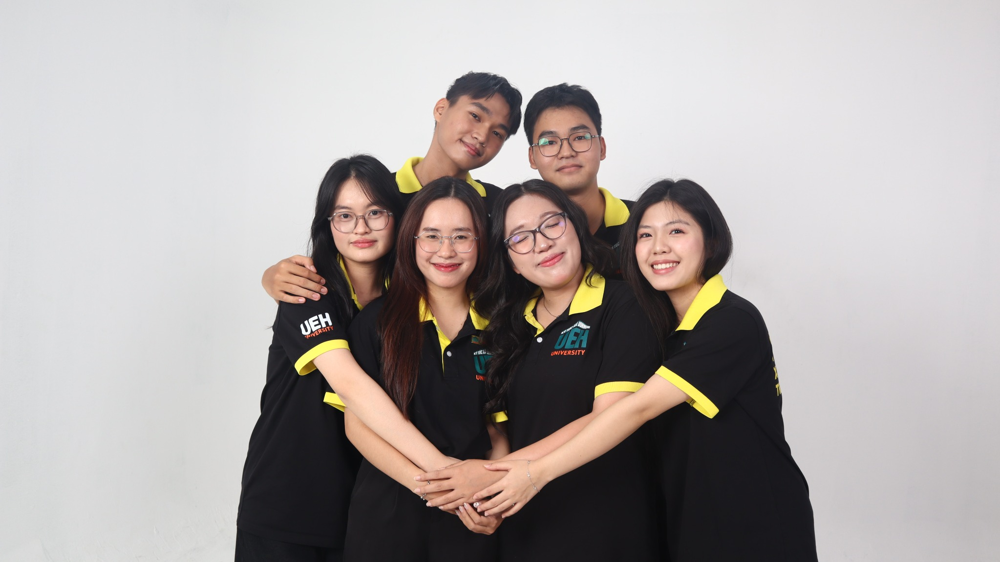

Ban Tổ chức - Xây dựng
Nền tảng vận hành của Liên Chi hội.
Ban Tổ chức - Xây dựng phụ trách công tác hành chính, nhân sự và triển khai hoạt động nội bộ; đồng thời góp phần xây dựng một tập thể vững mạnh, đoàn kết và chuyên nghiệp. Đây là ban giữ vai trò nền tảng trong việc duy trì tính kỷ luật, sự đồng bộ và sức bền phát triển của Liên Chi hội.
Mô tả công việc
- Tổ chức Đại hội, Hội nghị các cấp trực thuộc.
- Quản lý hồ sơ, hỗ trợ kế hoạch, hợp đồng và lưu trữ văn bản.
- Phụ trách hoạt động tìm kiếm Cộng tác viên Ban Chuyên môn.
- Tổ chức tập huấn, hoạt động nâng cao nhận thức và gắn kết nhân sự.
- Xây dựng nền tảng vận hành nội bộ và phối hợp triển khai các đầu việc chung.
Giá trị nhận được
- Nâng cao kỹ năng quản lý nhân sự và điều phối công việc.
- Phát triển kỹ năng mềm lẫn chuyên môn trong môi trường thực tế.
- Rèn tư duy quy tắc, chuẩn mực, chỉn chu và tinh thần trách nhiệm.
- Tích lũy kinh nghiệm tổ chức chương trình, sự kiện và công việc hậu cần - hành chính.
Tiêu chí
- Cẩn thận, chỉn chu, chủ động và sáng tạo.
- Thái độ tích cực, trách nhiệm, cầu tiến và biết phối hợp.
- Biết Word và Google Workspace cơ bản.
- Biết chỉnh sửa hình ảnh hoặc video là một lợi thế.